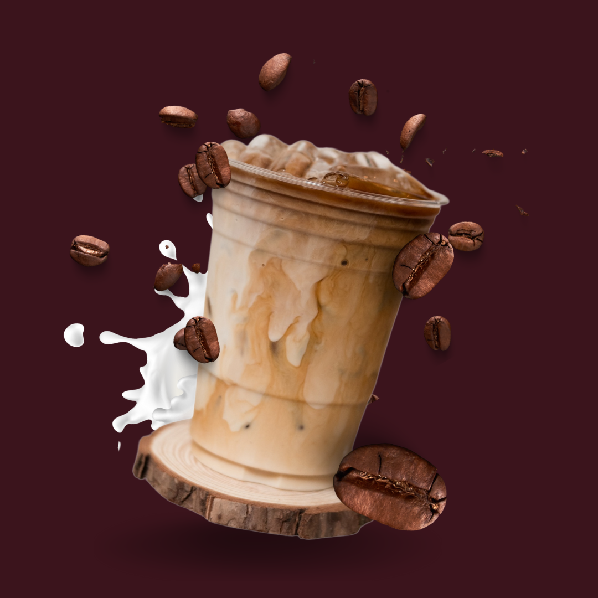

En iyi kahveciler ☕
Kahve dünyasına adımını at!
Kahve tutkunları için bir araya geldiğimiz bu platformda, en popüler kahve zincirlerini keşfedin.

Kahve tutkunları için bir araya geldiğimiz bu platformda, en popüler kahve zincirlerini keşfedin.
Bu web sitesi, dünya çapında tanınan kahve zincirlerini tanıtmayı hedefliyor. Starbucks, Dunkin' ve Costa Coffee gibi markalar, kahveseverler için farklı seçenekler sunarak global kahve kültürünü zenginleştiriyor. Amacımız, bu markaların varlığını ve sundukları deneyimleri paylaşmaktır.